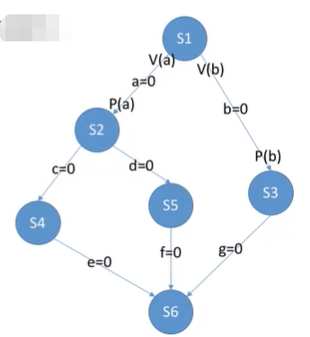
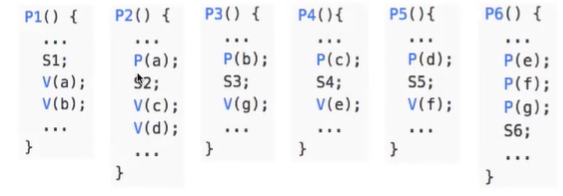
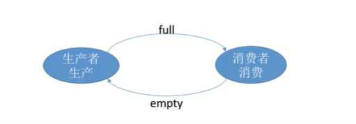
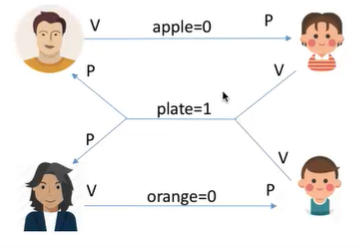
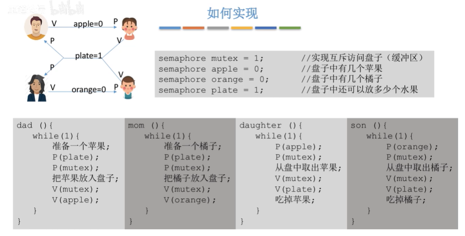
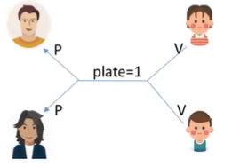
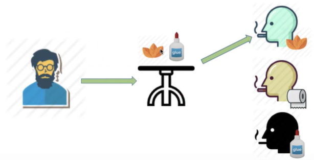
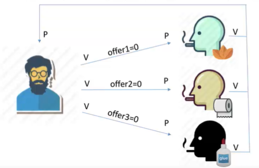
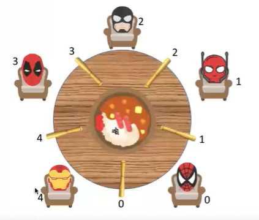

一、信号量机制
信号量其实就是一个变量，用一个信号量表示系统中某种资源的数量。
1、整型信号量
用一个整数型的变量作为信号量，用来表示系统中某种资源的数量。
对信号量的操作只有三种，初始化、P操作、V操作
存在的问题：不满足让权等待，会发生忙等
2、记录型信号量
用记录型数据结构表示信号量。
1 | /*记录型信号量的定义*/ |
3、AND型信号量
AND同步机制的基本思想是:将进程在整个运行过程中需要的所有资源，一次性全部地分配给进程，待进程使用完后再一起释放。只要尚有一个资源未能分配给进程，其它所有可能为之分配的资源也不分配给它。亦即，对若干个临界资源的分配采取原子操作方式:要么把它所请求的资源全部分配到进程，要么个也不分配。由死锁理论可知，这样就可避免上述死锁情况的发生。
二、信号量机制实现进程互斥
- 设置互斥信号量
mutex，初值为1。 - 在临界区前执行
P(mutex) - 在临界区后执行
V(mutex)
1 | /*信号量机制实现互斥*/ |
三、信号量机制实现进程同步
进程同步：要让各并发进程按要求有序地推进。
- 分析哪里需要实现同步关系，保证“一前一后”执行地两个操作。
- 设置同步信号量S，初始为0。
- 在“前操作”之后执行
V(S) - 在“后操作”之后执行
P(S)
1 | P1(){ |
若先执行到V(S)操作,则S++后S=1。之后当执行到P(S)操作时，由于S=1，表示有可用资源，会执行S--,S的值变回0，P2进程不会执行 block原语，而是继续往下执行代码4。
若先执行到P(S)操作，由于S=0，S--后S=-1，表示此时没有可用资源,因此P操作中会执行 block原语,主动请求阻塞。之后当执行完代码2，继而执行V(S)操作，S++，使S变回0，由于此时有进程在该信号量对应的阻塞队列中,因此会在V操作中执行 wakeup原语,唤醒P2进程。这样P2就可以继续执行代码4了。
四、信号量机制实现前驱关系
其实每一对前驱关系都是一个进程同步问题(需要保证一前一后的操作)
因此,
- 要为每一对前驱关系各设置一个同步变量
- 在“前操作”之后对相应的同步变量执行V操作
- 在“后操作”之前对相应的同步变量执行P操作


五、经典进程同步问题
1、生产者与消费者
- 生产者、消费者共享一个初始为空、大小为n的缓冲区。
- 只有缓冲区没满时,生产者才能把产品放入缓冲区,否则必须等待。（同步）
- 只有缓冲区不空时,消费者才能从中取出产品,否则必须等待（同步）
- 缓冲区是临界资源,各进程必须互斥地访问。
- 生产者每次要消耗
(P)一个空闲缓冲区,并生产(V)一个产品。 - 消费者每次要消耗
(P)一个产品,并释放一个空闲缓冲区(V)。 - 往缓冲区放入/取走产品需要互斥。
1 | semaphore mutex = l; //互斥信号量,实现对缓冲区的互斥访问 |
问题：能否改变相邻P、V操作的顺序？
若此时缓冲区内已经放满产品,则 empty=0,full=n则生产者进程执行①使 mutex变为0,再执行②,由于已没有空闲缓冲区,因此生产者被阻塞。
由于生产者阻塞,因此切换回消费者进程。消费者进程执行③,由于 mutex为0,即生产者还没释放对临界资源的“锁”,因此消费者也被阻塞。
这就造成了生产者等待消费者释放空闲缓冲区,而消费者又等待生产者释放临界区的情况,生产者和消费者循环等待被对方唤醒,出现“死锁”。
同样的,若缓冲区中没有产品,即full=0, empty=n。按③④①的顺序执行就会发生死锁
因此,实现互斥的P操作一定要在实现同步的P操作之后
V操作不会导致进程阻塞,因此两个V操作顺序可以交换。

2、多生产者和多消费者
盘子放苹果问题：



在本题中，即使不设置专门的互斥变量mutex，也不会出现多个进程同时访问的现象
因为缓存区大小为1，任何时候同步信号量最多为1
3、吸烟者问题
假设一个系统有三个抽烟者进程和一个供应者进程。每个抽烟者不停地卷烟并抽掉它,但是要卷
起并抽掉一支烟,抽烟者需要有三种材料:烟草、纸和胶水。三个抽烟者中,第一个拥有烟草、
第二个拥有纸、第三个拥有胶水。供应者进程无限地提供三种材料,供应者每次将两种材料放桌
子上,拥有剩下那种材料的抽烟者卷一根烟并抽掉它,并给供应者进程一个信号告诉完成了,供
应者就会放另外两种材料再桌上,这个过程一直重复(让三个抽烟者轮流地抽烟)


1 | semaphore offer1 =0; //桌上组合一的数 |
4、读者写者
- 允许多个读者可以同时对文件执行读操作
- 只允许一个写者往文件中写信息
- 任一写者在完成写操作之前不允许其他读者或写者工作
- 写者执行写操作前,应让已有的读者和写者全部退出
读优先：
1 | semaphore rw = 1; //用于实现对文件的互斥访问。表示当前是否有进程在访问共享文件 |
潜在的问题:只要有读进程还在读,写进程就要一直阻塞等待,可能“饿死”
因此,这种算法中,读进程是优先的
写优先：
1 | semaphore rw = 1; //用于实现对文件的互斥访问。表示当前是否有进程在访问共享文件 |
结论:
在这种算法中，连续进入的多个读者可以同时读文件；写者和其他进程不能同时访问文件；写者不会饥饿，所以并不是真正的“写优先”，而是相对公平的先来先服务原则。
5、哲学家进餐
张圆桌上坐着5名哲学家,每两个哲学家之间的桌上摆一根筷子,桌子的中间是一碗米饭。哲学家们倾注毕生的精力用于思考和进餐,哲学家在思考时,并不影响他人。只有当哲学家饥饿时,才试图拿起左、右两根筷子(一根一根地拿起)。如果筷子已在他人手上,则需等待。饥饿的哲学家只有同时拿起两根筷子才可以开始进餐,当进餐完毕后,放下筷子继续思考。

- 关系分析。系统中有5个哲学家进程，5位哲学家与左右邻居对其中间筷子的访问是互斥关系
- 整理思路。这个问题中只有互斥关系，但与之前遇到的问题不同的事，每个哲学家进程需要同时持有两个临界资源才能开始吃饭。如何避免临界资源分配不当造成的死锁现象，是哲学家问题的精髓。
- 信号量设置。定义互斥信号量数组
chopstick[5]={1,1,1,1,1}用于实现对5个筷子的互斥访问。并对哲学家按0~4编号,哲学家i左边的筷子编号为i，右边的筷子编号为(i+1)%5。
1 | //解决死锁！！！ |
各哲学家拿筷子这件事必须互斥的执行。这就保证了即使一个哲学家在拿筷子拿到一半时被阻塞,也不会有别的哲学家会继续尝试拿筷子。这样的话当前正在吃饭的哲学家放下筷子后,被阻塞的哲学家就可以获得等待的筷子了。